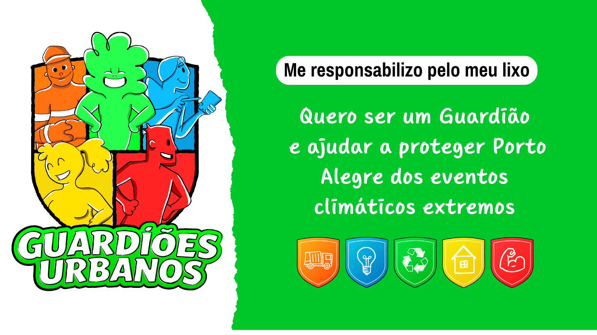
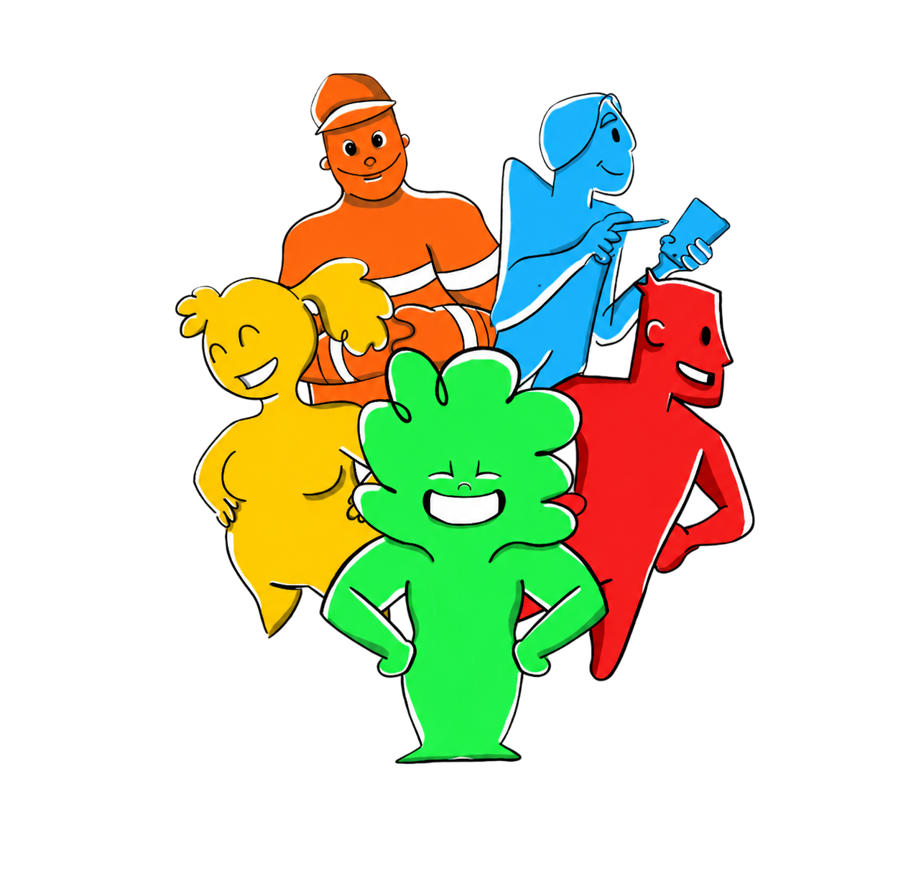

Sr. Cidade
Guardião inspirado no trabalho que a cidade faz (DMLU)

Dados pessoais • Autorizo, conforme a LGPD, o uso do meu nome completo, telefone e endereço para verificar se estou na área atendida pela cooperativa e para que ela possa entrar em contato comigo via WhatsApp. Meus dados serão usados somente para essa finalidade.

Guardião inspirado no trabalho que a cidade faz (DMLU)
Guardiã que representa as famílias que fazem a separação correta e entregam seu resíduo para o programa
Guardiões e guardiãs das cooperativas de triagem, que tornam a reciclagem possível
Guardião inspirado nos técnicos que dão suporte aos times e lideram ações para estarmos preparados para futuros eventos climáticos
Guardião que representa os catadores individuais, essenciais no processo
Você preenche o formulário e demonstra seu interesse em ser um guardião também
A equipe da cooperativa da sua comunidade entrará em contato
Sua família recebe os materiais de orientação e educação ambiental
Sua residência entra na rota de coleta da campanha
Juntos, damos destino correto aos resíduos e prevenimos danos maiores em casos de enchentes, desastres climáticos, deslizamentos